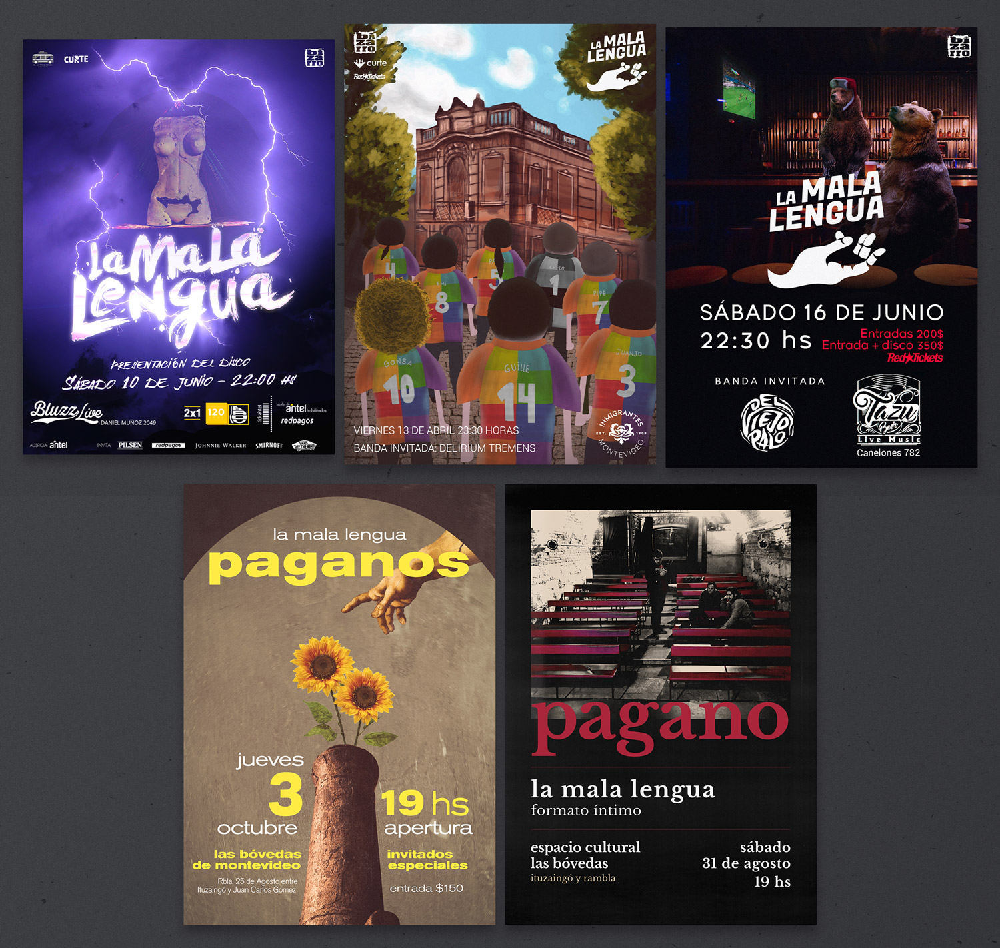

La Mala Lengua
La Mala Lengua fue una banda de rock formada en Montevideo en el año 2012. En 2015 grabaron su primer EP "Parece ser". Compartieron escenario junto a No te va gustar, La Chancha, Once Tiros, Cuatro Pesos de Propina, La Abuela Coca, entre otras bandas con trayectoria.
Entre marzo y julio del 2016 grabaron su primer álbum “La Mala Lengua" en el estudio Elefante Blanco, junto a Sebastián Peralta en la producción y editado por el sello Bizarro. En este participaron grandes músicos invitados como Christian Cary en guitarra (La Triple Nelson), y Denis Ramos en trombón (No te va gustar).
En 2019 publican su segundo álbum "Tomo impulso y vuelvo a hacer las cosas mal" con la participación de Emiliano Brancciari en voces (No te va gustar).
Tuve la suerte de acompañarlos en su camino como banda de rock en Uruguay. Participé en el diseño de imagen de sus eventos, algunas veces en fotografía, otras como cámara para videoclips, y el honor de participar en el diseño de su segundo álbum.
A continuación veremos el trabajo de comunicación realizado para eventos y otros movimientos de la banda.
Presentación del primer disco, 2017
Realicé la imagen del evento para diversos formatos publicitarios. La imagen fue expuesta en afiches callejeros, en web e incluso en la red de pantallas del transporte público. La escultura que aparece en la imagen forma parte de la tapa del disco publicado en 2016.


Presentación en Inmigrantes, 2018
Presentación de la nueva banda a partir del cambio en sus integrantes. La banda se preparaba para salir a la cancha.


Frío ruso en Tazú, 2018
La banda consolidaba su sonido y preparaba nuevas canciones del disco próximo a publicarse. Tiempo del mundial de Rusia, hicimos la promoción del evento con esta temática, jugando con las fechas de los partidos de la selección de Uruguay.


Rituales Paganos, 2019
Última presentación en vivo. "Tomo impulso y vuelvo a hacer las cosas mal" en las Bóvedas de Montevideo.


Otros
Participación como cámara en el video oficial de Botellas, durante el Durazno Rock de 2018, un evento espectacular. No paré de sorprenderme por las magnitudes de la infraestructura y la organización.
Pequeña animación ilustrada frame por frame para la canción Botellas.
Un famoso animé utilizando la canción Por el Loro